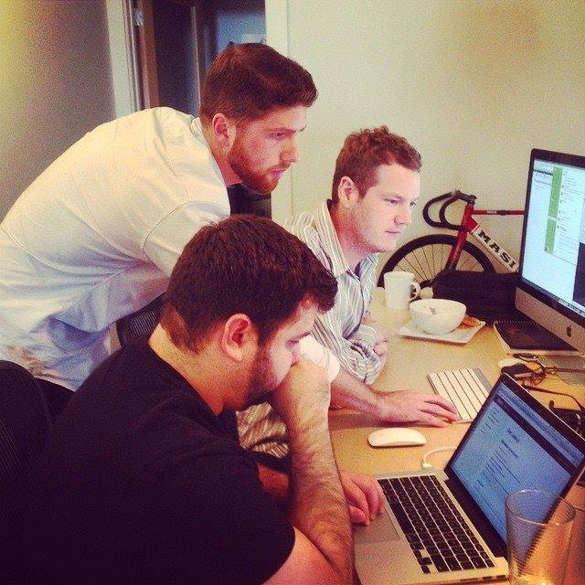
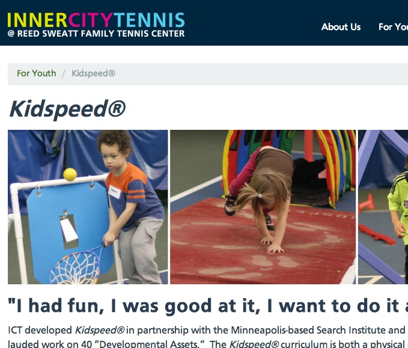
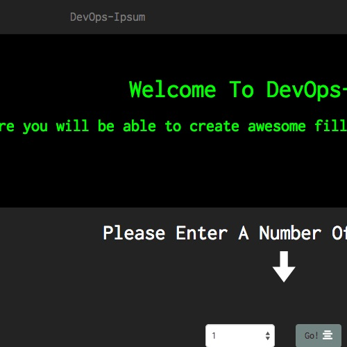
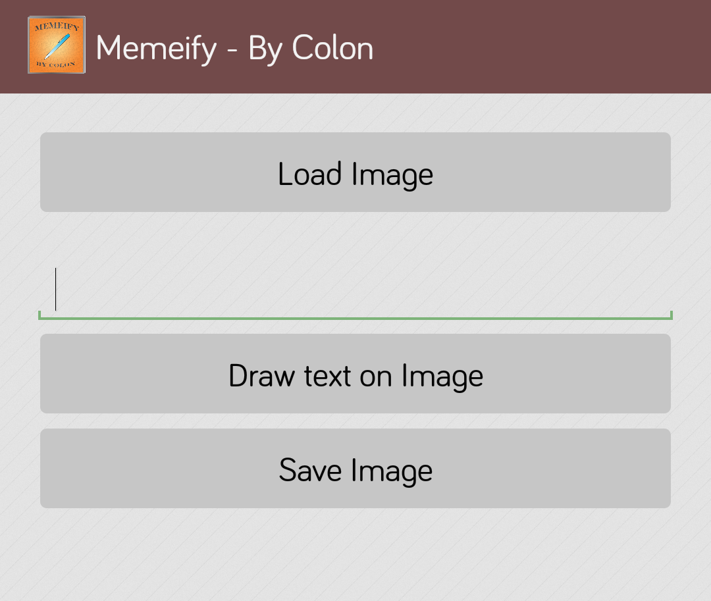
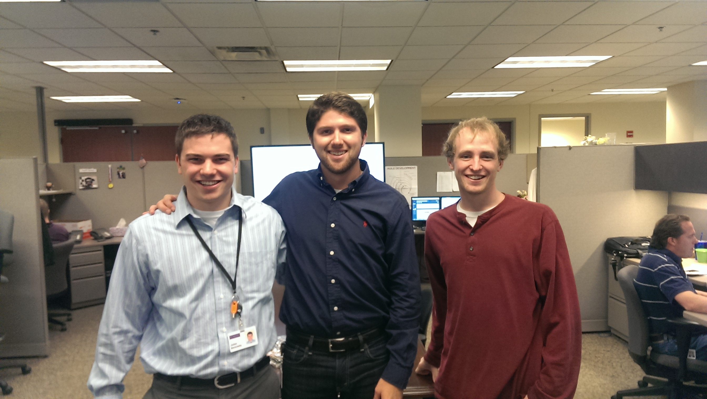
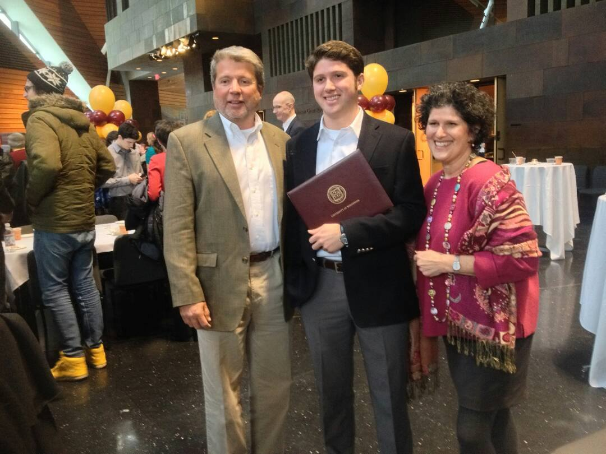

Work
About Me
Contact
TEN7
Pearson
U Of M
Education
TEN7 Interactive
Roles

Developer
DevOps Engineer
Quality Assurance Analyst
Major Projects

InnerCity Tennis
Hackday Projects

DevOps-Ipsum

Memeify
Pearson VUE
Roles

Software Quality Assurance Intern
Projects
Visual Report of Automated Tests - Updated In Real Time
University of MN - IT Department
Roles
Service Technician
Projects
Physics Department - Senior Independent Project
University of Minnesota
Physics Department

BS Physics
Awards
Evans Scholarship Recipient